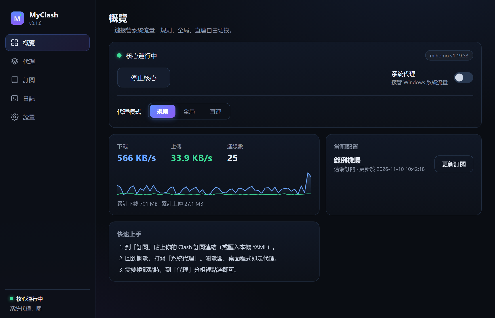
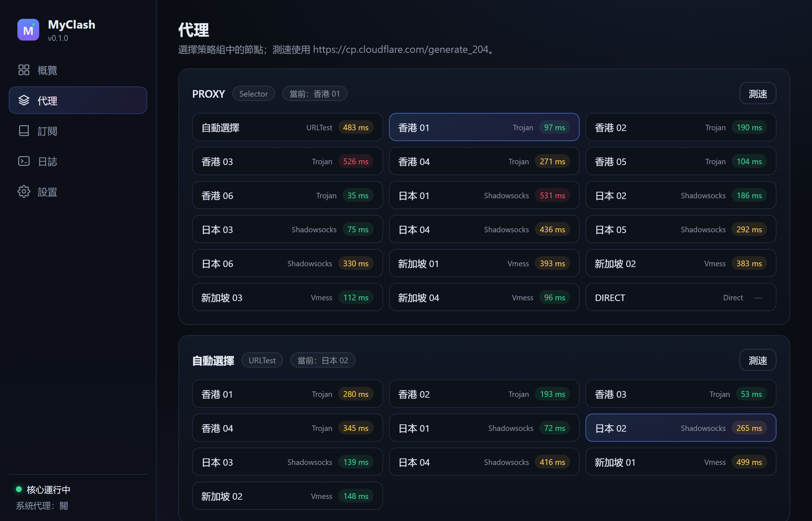
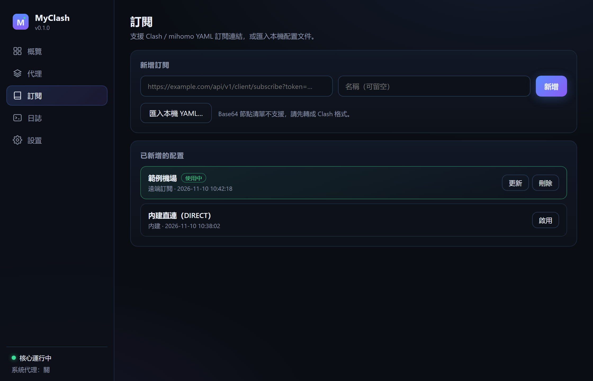

輕量的 Clash 桌面客戶端
一鍵接管系統流量
MyClash 把 mihomo 核心裝進一個乾淨的圖形介面：訂閱管理、節點切換、模式切換、即時速度，一屏搞定。

為什麼選 MyClash
一個殼，只做殼該做的事——核心交給成熟的 mihomo。
一鍵系統代理
開關即接管 Windows 流量；退出時自動還原你原本的代理設定，不留尾巴。
訂閱管理
貼上 Clash 訂閱連結即可使用；支援一鍵更新、多配置切換、本機 YAML 匯入。
節點選擇與測速
策略組可視化，點一下即切換節點；支援整組延遲測試，好壞一眼看清。
即時流量
上下行速度、連線數、累計流量一覽，30 秒趨勢圖幫你判斷線路狀況。
托盤常駐
關閉視窗不退出，托盤快捷開關系統代理與核心，不佔工作列。
輕量透明
無帳號、無節點、無後台服務；設定只存在本機 %APPDATA%\MyClash。基於 mihomo（GPL-3.0）。
介面預覽
深色、克制、沒有多餘的東西。


其他開源客戶端
MyClash 目前僅支援 Windows。其他平台可以選這些成熟專案（皆為第三方開源，版權歸原作者）。
常見問題
Windows 說「已保護您的電腦」，怎麼辦？
這是 SmartScreen 對未簽名程式的提示。點「更多資訊」→「仍要執行」即可。MyClash 完全開源，你可以自行檢視並從原始碼建置。
需要自己準備訂閱或節點嗎？
是。MyClash 只提供客戶端，不包含、不販售任何節點或訂閱服務。你需要自備 Clash 格式的訂閱連結或設定檔。
支援哪些配置格式？
Clash / mihomo 的 YAML 配置與訂閱連結。Base64 節點清單不支援，請先透過訂閱轉換服務轉成 Clash 格式。
系統代理開了但沒生效？
部分安全軟體或網路加速器會「守護」系統代理設定，把它們改回去。MyClash 開代理後會自動複核並提示。請在該軟體中關閉代理守護，或改用其白名單。
資料會上傳到哪裡嗎？
不會。設定、訂閱、日誌只存在你的電腦（%APPDATA%\MyClash），沒有任何統計或上報。
支援 macOS / Linux / 手機嗎？
v0.1 僅支援 Windows 10/11 x64。其他平台請參考上方的開源客戶端推薦。